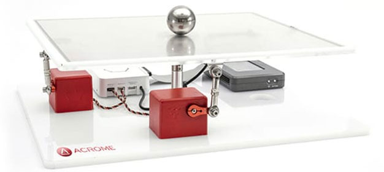
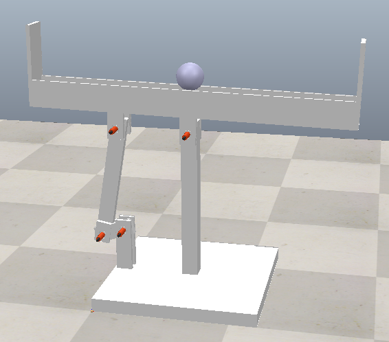
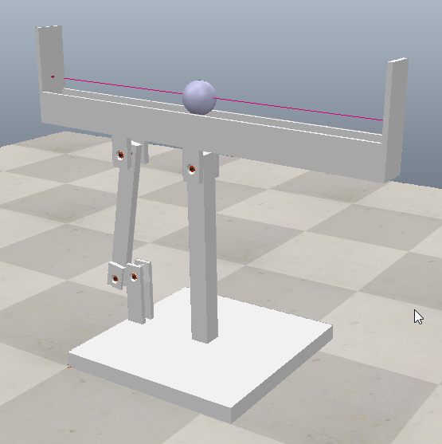
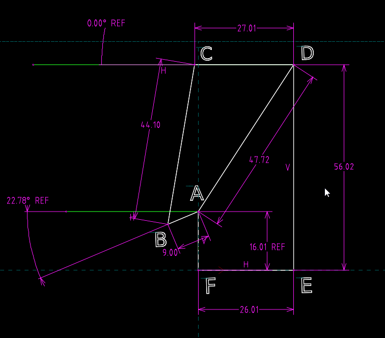
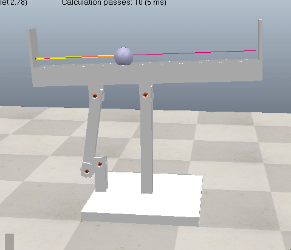
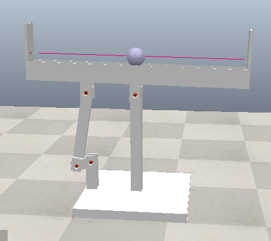
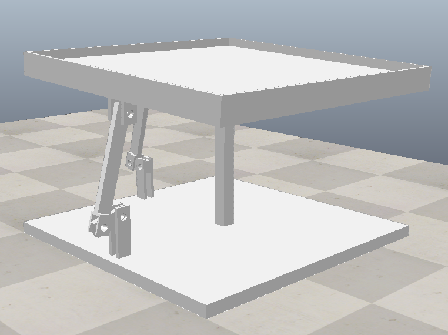

Loop the loop <<
Previous Next >> Virtual pinball
Ball balancing
Project background:

(above image file source) - download courseware.zip (or from @nfu onedrive)
ball_balance_table_courseware.pdf
實習專案二: 鋼球平衡系統設計與模擬：
設計一套可讓使用者利用瀏覽器選擇觀測位置與方位, 以及鋼球位於平台上特定座標點的鋼球平衡系統.
實習內容: 零組件設計繪圖、感測器配置、影像辨識系統設計、PID 控制系統設計 (自動控制、控制系統設計).
使用工具: 自選 MCAD 套件、CoppeliaSim 4.5.1 rev4、OpenCV、Python zmq Remote API.
交付內容: Github Pages 設計歷程、MCAD 零組件檔案、CoppeliaSim 場景、Python 控制與影像辨識程式、pdf 格式專案報告、Reveal.js 簡報.
1D 系統可行性分析:
https://github.com/JFBarryLi/PID_BallBalancer (1D)
Modelling and Control of Ball-Plate System
Mechatronic design of a ball-on-plate balancing system
https://github.com/mdecycu/eyrc2020-2021
1d_ball_balancing_table.7z

ball_beam_balancing_coppeliasim.7z (利用 Python zmqRemoteAPI 測量球與左方感測器的距離)
# pip install pyzmq cbor keyboard
# zmqRemoteApi_IPv6 為將 zmq 通訊協定修改為 IPv4 與 IPv6 相容
from zmqRemoteApi_IPv6 import RemoteAPIClient
import keyboard
# 利用 zmqRemoteAPI 以 23000 對場景伺服器進行連線
client = RemoteAPIClient('localhost', 23000)
print('Program started')
sim = client.getObject('sim')
# Get the handle of the proximity sensor and the ball
laser_handle = sim.getObject('/laser')
# Set the ball object in the property common tab to be detectable
ball_handle = sim.getObject('/ball')
sim.startSimulation()
print('Simulation started')
# Function to get the distance between the laser and the ball
def getDistance():
result, distance, _, _, _ = sim.readProximitySensor(laser_handle, ball_handle)
if result == 1:
return round(distance, 4)
else:
return None
while True:
if keyboard.is_pressed('q'):
# Stop simulation
sim.stopSimulation()
break
# Get and print the distance between the laser and the ball
distance = getDistance()
if distance is not None:
print('Distance:', distance)
else:
print('No object detected')
# 終止模擬
#sim.stopSimulation()

9_ball_and_beam.pdf

AB is the link of the servo motor, CD is on beam, which ABCD is a typical four-bar linkage.
A New Method for Teaching The Fourbar Linkage and its Application to Other Linkages

(Above simulation: Ball Beam Balance PID control - setpoint 0.3 m)

(Above simulation: Ball Beam Balance PID control - setpoint 0.9 m)

(Above simulation: Ball Beam Balance PID control - setpoint 0.9 m with disturbance)
2D 系統可行性分析:

Solvespace_ball_platform_model _2d.7z

(setpoint to 0.3 m, 0.3 m)

(setpoint to 0.9 m, 0.3 m)
延伸討論:
Can Above PID control system further integrated with HoRoSim?
HoRoSim 是一套能夠利用實體 Arduino 控制板對 CoppeliaSim 虛擬場景系統進行控制的虛實整合系統套件.
References:
Construction and theoretical study of a ball balancing platform
https://www.instructables.com/PID-Controlled-Ball-Balancing-Stewart-Platform/
https://acrome.net/post/the-basics-of-the-ball-balancing-table
https://youtu.be/nlHNWV8WBXA (Getting Started to Controlling a Ball Balancing Table)
https://web.altair.com/system-dynamics-and-controls-using-altair-compose
https://www.embeddedindia.com/download/Ball_Balancing_Table_Datasheet.pdf
https://altair.com/students/ (Compose studen edition)
Joint callback function for customed controller
https://github.com/mdecycu/Ball-Balancing-Machine
https://github.com/mdecycu/Ball-and-Plate-System
https://github.com/Chandan-nyk/Plane-Balancing-System-with-2-DOF
https://github.com/giusenso/Ball-Balancing-PID-System
https://github.com/JohanLink/Ball-Balancing-PID-System
Loop the loop <<
Previous Next >> Virtual pinball